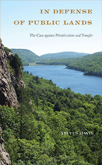

<body bgcolor="#FFFFFF" text="#000000" link="#0000FF" vlink="#CC0000" alink="#CC0000"><center><hr width="350" size="1" align="center" noshade>A comprehensive argument for why public land ought to remain firmly in the public's hands<hr width="350" size="1" align="center" noshade><p><a href="https://cdcshoppingcart.uchicago.edu/Cart/ChicagoBook.aspx?ISBN=&&PRESS=temple" target="_top">Buy this book!</a> | <a href="https://cdcshoppingcart.uchicago.edu/Cart/Cart.aspx?PRESS=temple" target="_top">View Cart</a> | <a href="https://cdcshoppingcart.uchicago.edu/Cart/Cart.aspx?PRESS=temple" target="_top">Check Out</a></p><p></p></center><!--none//--><h1 class = "booktitle">In Defense of Public Lands</h1> <h1 class = "subtitle">The Case against Privatization and Transfer</h1>
<h3>Steven Davis </h3>
paper: $29.95, Jun 18<BR>EAN:&nbsp;978-1-4399-1537-0<BR><font color=#990033>Not Yet Published Preorder</FONT><font size=-7><br>&nbsp;</font></p><p class="info">cloth: $89.50, Jun 18<BR>EAN:&nbsp;978-1-4399-1536-3<BR><font color=#990033>Not Yet Published Preorder</FONT><font size=-7><br>&nbsp;</font></p><p class="info">e-book: $29.95, Jun 18<BR>EAN:&nbsp;978-1-4399-1538-7<BR><font color=#990033>Not Yet Published Preorder</FONT><font size=-7><br>&nbsp;</font></p></p></td></tr></table>
<BR> <p class="info">264 pp<BR> 5.25 x 8.5<BR> 14 tables, 4 figs., 8 halftones, 1 maps <p class="info"><font size=-7>&nbsp;</font></p><p class="info">
</P><BLOCKQUOTE></BLOCKQUOTE>
<p>Debates continue to rage over the merits or flaws of public land and whether or not it should be privatized-or at least, radically reconfigured in some way. <i>In Defense of Public Lands </i>offers a comprehensive refutation of the market-oriented arguments. Steven Davis passionately advocates that public land ought to remain firmly in the public's hands. He reviews empirical data and theoretical arguments from biological, economic, and political perspectives in order to build a case for why our public lands are an invaluable and irreplaceable asset for the American people. <i>In Defense of Public Lands </i>briefly lays out the history and characteristics of public lands at the local, state, and federal levels while examining the numerous policy prescriptions for their privatization or, in the case of federal lands, transfer. He considers the dimensions of environmental health; markets and valuation of public land, the tensions between collective values and individual preferences, the nature and performance of bureaucratic management, and the legitimacy of interest groups and community decision-making. Offering a fair, good faith overview of the privatizers' best arguments before refuting them, this timely book contemplates both the immediate and long-term future of our public lands.<br>
<P CLASS="top"><A HREF="#top">BACK TO TOP</A></P>&nbsp;
<BR>&nbsp;
&nbsp;<P>
</P><BR>&nbsp;
<H2 class="inpageheading"><A NAME="author bio"></a>About the Author(s)</H2><p><b>Steven Davis </b>is a Professor of Political Science and Environmental Studies at Edgewood College in Madison, WI.<br>
<P CLASS="top"><A HREF="#top">BACK TO TOP</A></P>
<p><h2 class="inpageheading"><a name="subjects"></a>Subject Categories</h2> <p><a href="http://www.temple.edu/tempress/political.html" target="_top">Political Science and Public Policy</a> <br><a href="http://www.temple.edu/tempress/nature.html" target="_top">Nature and the Environment</a> <br><a href="http://www.temple.edu/tempress/business.html" target="_top">Business/Economics</a> <br><a href="" target="_top"></a> <br><a href="" target="_top"></a> </p>
</p>
<P>
</P>
<p align="center"><a href="https://cdcshoppingcart.uchicago.edu/Cart/ChicagoBook.aspx?ISBN=&&PRESS=temple" target="_top">Buy this book!</a> | <a href="https://cdcshoppingcart.uchicago.edu/Cart/Cart.aspx?PRESS=temple" target="_top">View Cart</a> | <a href="https://cdcshoppingcart.uchicago.edu/Cart/Cart.aspx?PRESS=temple" target="_top">Check Out</a></p><p><font face="Arial" size="1"><a href="copyright.html" onMouseOver="window.status='Web Copyright Policy';return true;" onMouseOut="window.status=''" title="Web Copyright Policy">&copy;</a> 2018 <a href="http://www.temple.edu" target="new" onMouseOver="window.status='Link to Temple University home page';return true;" onMouseOut="window.status=''" title="Link to Temple University home page">Temple University</a>. All Rights Reserved. http://www.temple.edu/tempress/titles/2470_reg.html</font></p>